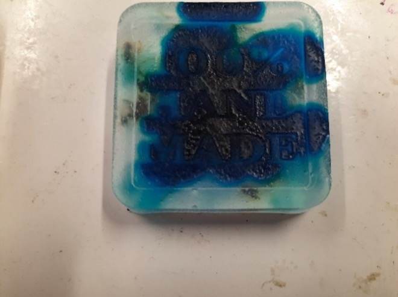
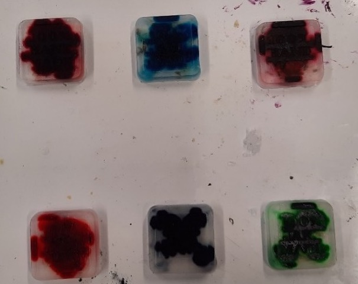

Seife selber machen!
Zutaten:
- 200g Basisseife (20g pro Stück)
- Wasserunlösliche Farbstoffe
- Geruchsaromen
Materialien:
- Einen Topf
- Eine Hitzequelle bis zu 120°C
- Seifenformen
- Eine Käsereibe
Schritt 1: Die Seifen-Zerkleinerung
Zuerst das Wasser in eine Flasche füllen, dann Essig und Öl oder Zweige zugeben. Vor jedem Gebrauch wieder schütteln. Ätherische Öle, Rosmarin oder Lavendel wirken antibakteriell, antiviral und gegen Pilze.
Schritt 2: Die Seifen-Schmelzung
Nach dem wir unsere Seife in den Topf befördert haben, müssen wir sie nun erhitzen. Dazu stellen wir den Topf auf unsere Hitzequelle und erhöhen die Temperatur auf etwa 120°C. Nun heißt es warten, bis der Inhalt des Topfes flüssig ist. Noch eine kurze Warnung: Das Schmelzen der Seife riecht sehr unangenehm und könnte eventuell ein Gefühl der Übelkeit auslösen.
Schritt 3: Vergießen und Verfärben
Nun beginnt der Beste Teil: Das Aussehen der Seife anzupassen. Um dies tun zu können, müssen wir zunächst unsere flüssige Seife in die Seifenformen gießen. Während man die Formen ausfüllt, sollte, wenn möglich, ein Partner die Farben hinzugeben. Hier genügen meist nur wenige Tropfen. Hat man keinen Partner, muss man die Farbe nach dem Eingießen zugeben und verrühren.

Schritt 4: Geruch und Aufbewahrung
Da wir nun bereits die Farbe unserer Seife festgelegt haben, müssen wir uns nur noch um eine Sache kümmern: Den Geruch. Aktuell sollte die Seife kaum noch nach etwas riechen. Hier kommen unsere Aromen ins Spiel. Man kann diese nach Lust und Laune mischen, allerdings riechen nicht alle Kombinationen unbedingt gut. Wenn wir mit den Gerüchen fertig sind kommen wir zur Aufbewahrung. Die Seife sollte nach mindestens einem Tag bei Raumtemperatur trocken sein. Es ist nicht empfehlenswert die Seife in einem Kühlschrank aufzubewahren, da hier die Seife nach zu langer Wartezeit sehr hart werden kann. Hat man alle obigen Schritte befolgt, sollte man jetzt mehrere kleine, handliche Seifen vor sich haben. Perfekt als Geschenke und allgemein Nützlich und am besten: Komplett selbst gemacht!